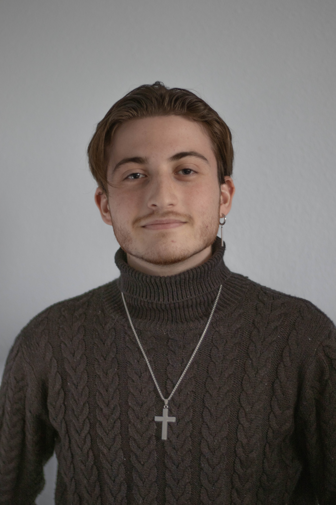

Portfolio - 2026
Salut, je suis Kenzo
Développeur Informatique · Étudiant en BUT
Bienvenue sur mon portfolio. Actuellement en cours de validation de ma 2e année de BUT Informatique, j'ai conçu cet espace pour présenter mes réalisations majeures et mon suivi de compétences. En vue de ma rentrée en BUT3 (Rentrée 2026) dans le parcours Réalisation d’Applications, je recherche activement une alternance d’un an pour mettre ma rigueur et mes compétences au service de vos projets.